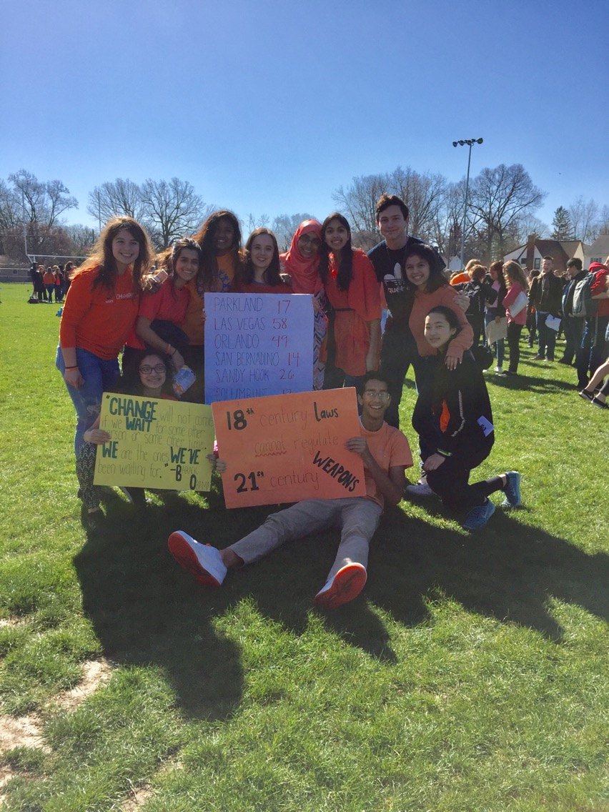

Fed up. Shocked. Scared. That's how I would describe how my classmates and I felt reading the news on February 18th, 2018 - the date of the parkland shooting. The next day in class, instead of going over the Julias Ceasar test, we spent the class period discussing the rising gun violence - particularily in schools - in America and how we were becoming desensitized to it. Most importantly, we wondered what we could do about it.
That was the birth of the West Lafayette chapter of the national student walkout. Along two of my closest friends and our english class, I was the lead organizer of a 300+ student walkout on April 20th, 2018. We fundraised money to donate to victims of gun violence and coordinated student speakers to be able to share their platform. We wanted to show legislators and lawmakers that we were fed up and that we demand change.

My english class and I posing for a picture after the walkout.